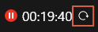
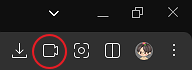
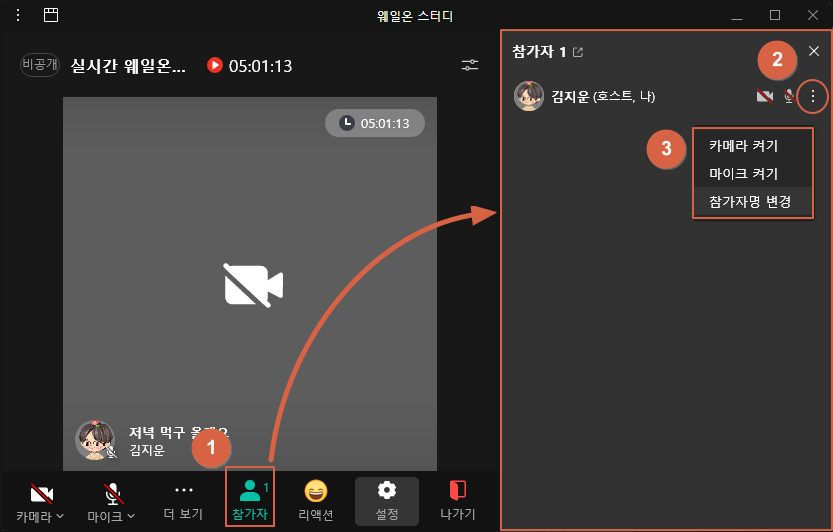
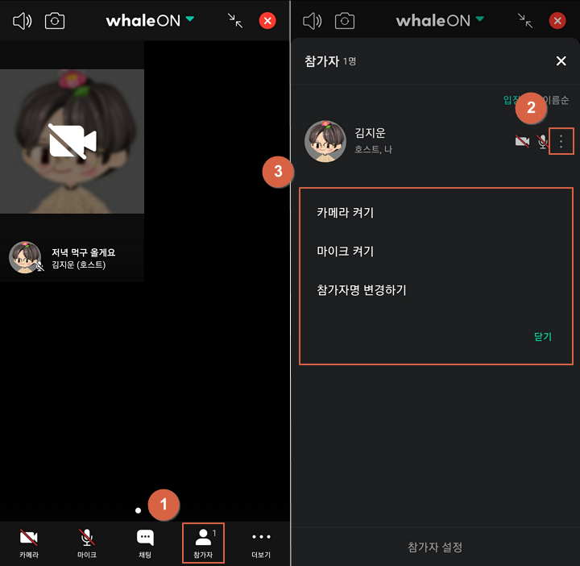

• 주의: 로그인 없이 웨일온 스터디에 참가하실 경우 랭킹에 표시되지 않습니다.
• 6월 8일 업데이트: 타이머 리셋 기능이 데스크탑 웨일온에 추가되었습니다. 리셋 버튼을 누르면 당일 공부시간이 0으로 초기화됩니다. 주의해주세요.

• 5월 4일 업데이트: 회의실 타이머 ON/OFF 기능이 데스크탑 웨일온에 추가되었습니다. 스터디 랭킹에는 실제 공부시간만 반영되니 공부하실 때는 꼭 타이머를 켜주세요.
• 웨일 브라우저 실행 후, 우측 상단 웨일온 아이콘 클릭
• ID/PW를 입력한 후, 입장합니다.

• 톡방에서 주소를 클릭하거나, 복사 후 웨일 주소창에 붙여 넣기 합니다.
• 입장하기 클릭! (네이버 로그인 필요)
• 비밀번호 입력 후 입장합니다.
• 웨일 어플 실행 후 우측 하단에서 = 모양
• 회의입장 누르고, 아이디와 비밀번호 입력 후 입장합니다.
PC

MOBILE

PC
MOBILE
PC
• 설정 > 개인정보 보호(whale://settings/secrecy) > 공용 PC로 설정 ON > 웨일 재부팅 > 로그인 후 공용 PC 설정 OFF
• 윈도 업데이트 다운로드: 32비트 64비트 (MS 공식 사이트)
• 운영체제에 맞게 KB2813430 업데이트 다운로드 > 업데이트 설치 > 웨일 재설치
• 스피커가 있는 PC인지 확인해주세요, 스피커가 없으면 입장이 되지 않습니다.
• 바이러스 프로그램이나 보안 프로그램이 실행 중이거나 설치되어 있는지 확인해 보세요. (예: Ahnlab Transaction, DRM Tools, MS Defender 실시간 감시, Mcafee 백신, AppCheck 등)
• 채팅방에서 @홀리, 증상과 사용하시는 환경(예: 윈도 10, 노트북, 외장캠 등) 적어주시면 도와드리겠습니다.